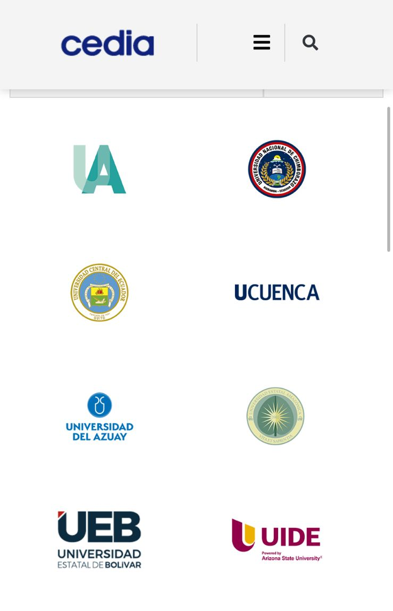

Año 2002: Fundación de CEDIA
Si el 2001 fue el año de la precariedad, el 2002 fue el año de la visión estratégica. La UCE se convirtió en miembro de CEDIA.
Ficha del Proyecto: Red Avanzada
- 📝 Proyecto: Constitución del Consorcio Ecuatoriano para el Desarrollo de Internet Avanzado (CEDIA).
- 💰 Inversión Inicial: $20,000 USD (Aprox. Cuota de Membresía Fundacional).
- 👤 Encargado: Rectorado (Dr. Víctor Hugo Olalla) y Comisión de TICs.
- 🎯 Objetivo: Crear una infraestructura de fibra óptica independiente de los proveedores comerciales para fines científicos.
1. El Hito Histórico
Las principales universidades del país se unieron para crear una infraestructura propia de fibra óptica.

Figura 1: Alianza interuniversitaria para la creación de la red.
2. Comparativa Técnica
| Característica | Red Comercial (Andinatel) | Red CEDIA (Académica) |
|---|---|---|
| Velocidad | Baja (Kbps - Dial up) | Alta (Mbps - Fibra Óptica) |
| Estabilidad | Intermitente | Dedicada 24/7 |
| Uso | Administrativo | Investigación Científica |
3. Impacto en la Investigación
Esta alianza permitió acceder a bases de datos científicas que antes eran inalcanzables por la lentitud de la red comercial.

Figura 2: Documentación del proyecto de investigación impulsado por la nueva red.
Fuentes y Enlaces Directos:
- Historia Oficial de CEDIA Sitio oficial del Consorcio donde se detalla la firma del acta constitutiva en 2002.
- Historia de RedCLARA Documentación sobre la conexión latinoamericana a la que accedió Ecuador.